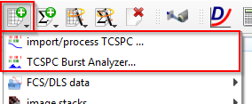

$$qf_commondoc_header.start$$ $$qf_commondoc_header.end$$
Introduction
This tool allows to read data from single-photon counting (or time-correlated single-photon counting, TCSPC) experiments. The data may be processed in several ways:
Both tools are available from the menu Data Items | Insert Raw Data in the main window, or the respective toolbutton:
